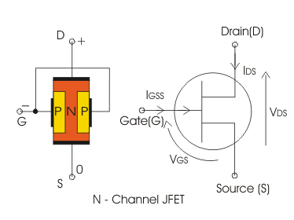
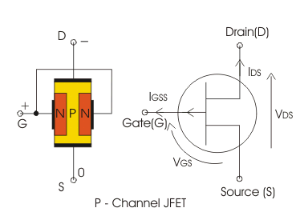
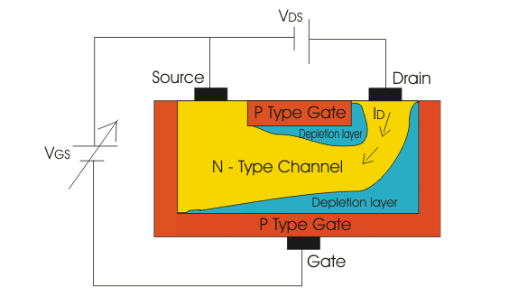
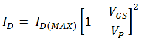

P-Channel JEFT
Biasing of JFET
Operation of Junction Field Effect Transistor or JFET
JEFT Characteristics or Junction Field Effect Transistor Characteristics
JFET as Switch
Applications of JFET
The junction field effect transistor or JFET is one of the simplest transistors from the structural point of view. It is a voltage controlled semiconductor device. In this, the electric current is carried by only one type of carriers. So, it is a unipolar device. It has a very high input electrical resistance.
JFET
JFET consists of a doped Si or GaAs bar. There are ohmic contacts, the two ends of the bar and semiconductor junction on its two sides. If the semiconductor bar is n - type, the two sides of the bar is heavily doped with p - type impurities and this is known as n - channel JFET. On the other hand if the semiconductor bar is p- type, the two sides of the bar is heavily doped with n - type impurities and this is known as p- channel JFET. When a voltage is applied between the two ends, a electric current which is carried by the majority carriers of the bar flows along the length of the bar.
There are several terminals in JFET. The terminal through which the majority carrier enter the bar and the terminal through which they leave are known as source (s) and drain (D) respectively. The heavily doped region on the two sides is known as the gate (G).
In junction field effect transistor, the junction is a reverse biased. As a result, depletion regions form, which extend to the bar. By changing gate to source voltage, the depletion width can be controlled. So, the effective cross section area decreased with increasing reverse bias. So, the drain electric current is a function of the gate to the source voltage:
Now days JFET is obsolete. Its applicants are limited to circuit design. Where it can be used an amplifier and as a switch both.
N-Channel JFET

A semiconductor bar of n-type material is taken & ohmic contacts are made on either ends of the bar. Terminals are brought out from these ohmic contacts and named as drain & source as shown in the figure below. On the other two sides of the n-type semiconductor bar, heavily doped p-type regions are formed to create a p-n junction. Both these p-type regions are connected together via ohmic contacts and the gate terminal is brought out as seen below. Figure below shows the n-channel & p-channel JFET with symbols. The arrow on the gate indicates the direction of the current. Current flows through the length of the n-type bar (channel) due to majority charge carries which in this case are electrons. When a voltage is applied between the two ends, a electric current which is carried by the majority carriers electrons flows along the length of a bar. The majority carriers enter the bar through the source terminal and leave through the drain terminal. The heavily doped regions of the n-type bar are known as the gates.
The gate source junctions is reverse is biased as a result depletion regions from which extend to the bar by changing gate to source voltage effective cross sectional area decreases with the function of the gate to source voltage.
P-Channel JEFT

p-channel JFET consists of a p-type silicon or GaAs. Two sides of the bar is heavily doped with n-type impurities. When a voltage is applied between the two ends, a electric current which is carried by the majority carrier holes flow along the length of a bar.
The gate source junction is reverse biased as a result depletion regions form, which extend to the bar by changing gate to extend to source voltage the depletion width can be controlled. The effective cross sectional area decreased with increasing reverse bias, so the drain electric current is the function of the gate to source voltage.
Biasing of JFET
The gate to source p-n junction of a JFET is always reverse biased and supply voltage is given across the drain to source terminal.
Biasing of JFET
Operation of Junction Field Effect Transistor or JFET
Operation with gate to source voltage = 0
If an n-channel JFET is biased as explained above and the gate to source voltage is kept zero, due to the positive drain to source voltage few electrons which are available for conduction in the n-type material will start flowing from the narrow passage (channel) from source to drain. This electric current is called as drain current. As the channel has some finite resistance it will cause some voltage drop across the channel. Hence the depletion region of the p-n junction starts increasing and penetrates more into the n-type material as it is lightly doped. Due to this the width of the channel available for conduction is reduced. The penetration of the depletion region into the n-type region depends on the reverse bias voltage. Maximum drain electric current ID(MAX) will flow through the device when the channel is widest i.e. when VGS is zero.

Operation with negative gate to source voltage
As a negative voltage is applied to the gate to source p-n junction the depletion region increases and penetration of the depletion region into the n-type channel further increases. If the negative gate to source voltage is further increased the depletion region spreads more and more inside the n-type bar. Due to this less and less number of charge carries (electrons) can pass through the channel and the drain electric current reduces. Hence with increase in negative gate to source voltage drain electric current reduces. At a certain value of this voltage the depletion region from both the ends will increase and touch each other and the drain electric current will become zero. This gate to source voltage at which drain electric current is cutoff is called as VGS(OFF). As seen the VGS controls ID. Hence, JFET is a voltage controlled device. The relationship between ID and VGS is given by Shockley’s equation

Where, VP is the pinch off voltage which is the value of drain to source VDS at which drain electric current reaches its constant saturation value. Any further increase in VDS does not affect ID.
JEFT Characteristics or Junction Field Effect Transistor Characteristics
In this characteristics we can find three regions,
1) The linear or the ohmic region: Here the drain to source voltage is small and drain electric current in nearly proportional to the drain to source voltage. When a positive drain to source voltage is applied, this voltage increases from zero to a small value, the depletion region width remain very small and under this condition the semi conductor bar behaves just like a resistor. So, drain electric current increases almost linearly with drain to source voltage.
ii) The saturation of the active region: Here the drain electric current is almost constant and it is not dependent on the drain to source voltage actually. When the drain to source voltage continuous to increase the channel resistance increases and at some point, the depletion regions meet near the drain to pinch off the channel. Beyond that pinch off voltage , the drain, electric current attains saturation.
iii) The breakdown voltage: Here the drain electric current increases rapidly with a small increase of the drain to source voltage. Actually for large value of drain to source voltage, a breakdown of the gate junction takes place which results a sharp increase of the drain current.
Transfer characteristics
The graphical characteristics plot of the saturation drain electric current against the gate to source voltage is known as the transfer characteristics of JFET. It can be obtained from static characteristics very easily. The transfer characteristics of an n- channel is shown below.
JFET Characteristics
JFET as Switch
The junction field effect transistor (JFET) can be used as an electronically controlled switch to control electric power to a load.
JFET’s are normally on (NO) devices. They are normally saturated devices. When a reverse bias is applied between gate and source, the depletion regions of that junction expand and pinching off the channel through which electric current flowing takes place. If the channel is pinched the electric current does not flow the device will be in switched off condition.
By this process junction field effect transistor can be used as switches. But now days their application is obsolete. An example of JFETs acting as a switch and the corresponding circuit is given below.
JFET Switch
Applications of JFET
The junction field effect transistor has many application in the field of electronics and communication.
Some of these applications are stated below.
1. Low noise and high input impedance amplifier:-
Noise is an undesirable disturbance which interferes with the signals information - greater the noise less the information. Energy electronics device cause some amount of noise. If FET s is used at the front end, we get less amount of amplified noise at the output. Now, it has very high input impedance. So, it can be used in high input impedance amplifier.
2. Buffer amplifier:-
Buffer amplifier should have very high input impedance and low output impedance. Because of high i / p impedance and low output impedance, FET acts as great buffer amplifier. the common drain mode can be used in this purpose.
3. R.F. Amplifier:-
JFET is good in low electric current signal operation as it is a voltage controlled semiconductors device. It has very low noise level. So, it can be used as RF amplifier in receiver sections of communication field.
4. Current source:-
Here all the supply voltage appears across load. If the electric current tries to increase very much, the excessive load a electric current drives the JFET in to active region. Thus JFET acts as a current source .
5. Switch:-
JFET may be used as an on / off switch controlling electrical power to load. An example is given below
JFET Chopper
Chopper :- When a source wave is applied to the gate of JFET witch, the chopper operation can be done using JFET.
6. Multiplexer:-
Analog multiplexer circuit can be made using JFETs. An example is given below.
JFET Analog Multiplexer
 by
by {kind=link}